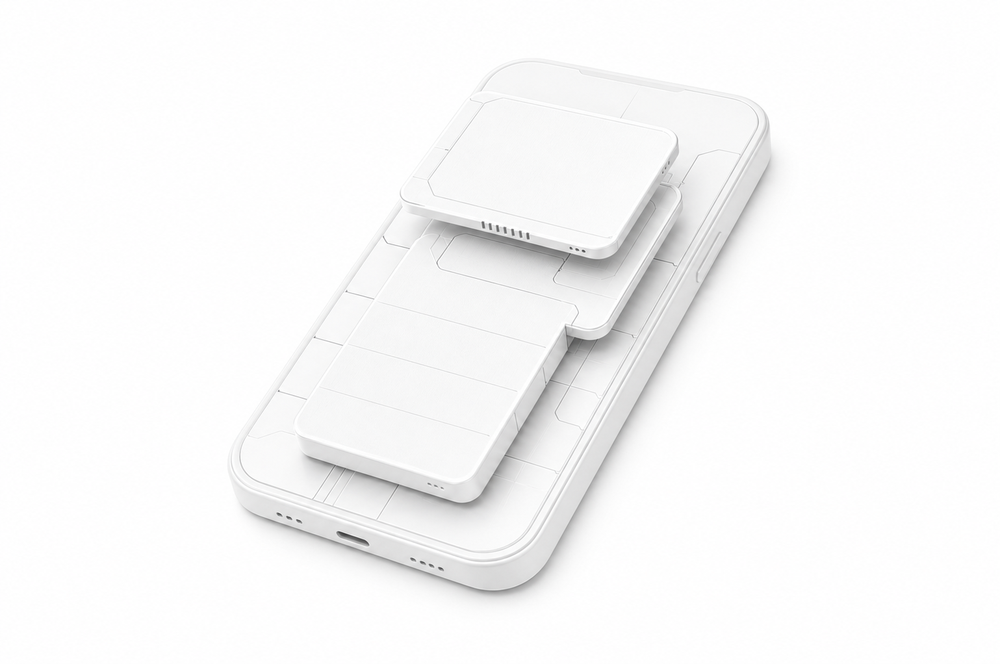

内核级 SU 与鉴权
root 在内核授予，支持按 App 白名单授权、per-app SELinux 域配置。
KERNEL LEVEL · ANDROID ROOT
在 Linux 内核层授予与管理 root 权限，而非用户态。基于 KernelSU 深度定制，内建一套面向隐蔽与对抗检测的内核功能。

01 / ABOUT
XinovaSU 是一个基于内核的 Android Root 解决方案，由 KernelSU 二次开发而来。它把 root 的授予、鉴权、模块加载全部下沉到内核层完成——相比传统用户态方案，更难被检测、权限控制更细粒度，并支持 systemless 的模块化系统改造。
Android 12 · 5.10 → Android 16 · 6.12
02 / CAPABILITIES
root 在内核授予，支持按 App 白名单授权、per-app SELinux 域配置。
systemless 修改，兼容主流 KernelSU 模块生态，内置 WebUI 入口。
开机自动挂载模块，并可按 App 卸载指定挂载点。
跨 7 个 GKI KMI 构建验证，内核模块（LKM）形态加载。
03 / FEATURES
关键能力彼此独立又协同工作，为你提供干净、稳定、可控的系统环境。
01
隐藏 Bootloader 解锁 / verified-boot 状态
把 ro.boot.* 属性伪装成“已锁定 / green”。02
开机自动卸载指定挂载点
按 App 卸载指定挂载点，隐藏模块存在。03
伪装内核版本与构建时间
uname · /proc/version · osrelease04
内核层向指定 App 隐藏文件与目录
命中路径对目标 App 返回 ENOENT。05
内核层阻止所选 App 联网
通过 LSM 钩子按 App 拦截外发连接。04 / ENGINEERING